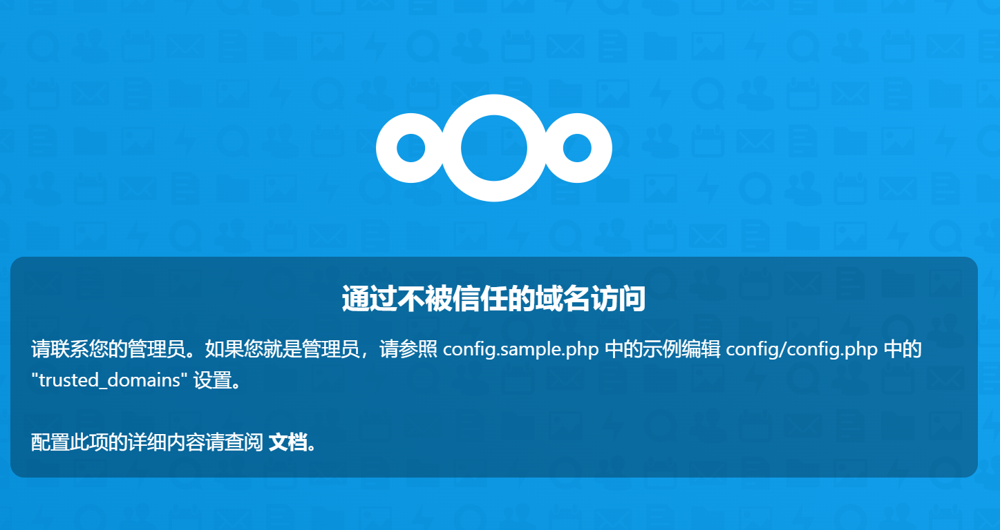

原由
我了解到NAS这个东西是21年夏天的时候，那时候正好也是我对存储空间的需求快要超过电脑的硬盘的容量的时候。总的来说我觉得NAS是必要的的原因在两点——一是曾经丢过一次数据导致的备份不足恐惧症，二是最近B站这一系列操作让我意识到的把自己需要的东西放在除了自己的硬盘上的任何地方都是靠不住的。也因此我搭建NAS的目的也就是这两个：方便地备份电脑上的文件，以及存储并随时获取总量不小的动画文件。
这里我不费笔墨详细介绍NAS是什么了，因为会认真看这篇文章的人应该也不需要我介绍。只是要说明一点，自建NAS并不是任何情况下的最优解，所需的硬件设备的价格并不是很低（这里我用的是树莓派+硬盘DIY，如果买成品NAS的话价格会更高），折腾起来也确实比较费时间，以及后面还可能会有维护服务器和硬盘等需要费功夫。我选择自搭NAS的原因除了硬的需求之外，也有一部分就是单纯地觉得这样比较酷，搭起来是个比较有成就感的事。现在我的NAS平稳运行了几个月，给我带来的方便确实是挺大的。我额外加这一段的原因就是强调一下，我不确定是否应该推荐每个人都自搭一个NAS。不过如果你确定这是你真的需要的，那么这篇文章里记录的教程和踩坑合集可能会对你有帮助。
硬件
树莓派
树莓派在淘宝京东上都很容易就能买到，我买的是目前最新（也是最高性能的）树莓派4B 8G内存版，在别处又买了金属外壳+散热风扇+电源线的套装。有的会卖外接屏幕和键盘，这个没什么用，树莓派本就是买来当做服务器，用ssh连接上去就完全可以操作，没必要额外花钱。另外需要买一个TF卡（micro SD卡，就是以前的手机用的存储卡）作为树莓派的存储，TF卡价格不贵，可以买一个容量大一点的，后面部署docker服务还是需要一些空间的，我现在用的是64G的卡。（在京东搜的时候加上关键词树莓派会贵个几十块钱，不知道为啥）
安装树莓派系统网上有很多教程，随便找一个就行了。因为要用SSH远程登录，在开机前要注意写好连接WiFi的配置文件。我手上的树莓派只能连接2.4GHz频段并需要关闭第六代技术标准，另外带中文的SSID也连接不上。
硬盘
机械硬盘是很娇贵的东西，突然断电就可能导致硬盘数据读取头划伤盘片，因此对硬盘的供电需要格外注意。有这样的说法，树莓派的USB接口供电不足以带起硬盘，因此直接连硬盘是比较危险的。另外NAS肯定是需要多块硬盘组阵列的，如果用USB集线器之类的东西把本就功率有限的电源再分开就更危险了，因此我买了一个独立供电的硬盘柜，通过USB接口连接到树莓派上。
raid方案的选择参考了知乎上的这篇文章。我的选择是snapraid，因为我的工作还是要在电脑上完成的，新生成的文件本就不会实时同步到NAS，每天从电脑同步一次的频率就完全够了，因此用snapraid每天建立一次快照就够了。而snapraid就算一块盘彻底损坏也不会影响阵列中其他盘的数据（不像硬件RAID将所有数据都分块放在不同盘里），比较满足风险厌恶的选择。另外，snapraid不需要阵列中盘的大小都是一致的，只需要一块容量最大的盘作为校验盘，因此对于后续扩充也更加灵活。
我对硬盘的品牌不是很熟悉，买的是据说适合做NAS的西数红盘。我总共买了三块盘，两块4T的和一块1T的，其中一块4T的盘做校验盘，另外两块存放数据。使用mergerfs可以很方便地将两块盘在逻辑上当成一整块来用。（mergerfs生成的挂载路径不方便输入，可以建立一个软链接链接到mergerfs路径，这样不仅方便输入和记忆，在重启后重新挂载硬盘也只需要修改链接的目标地址，不需要重新配置存储在硬盘上的服务）
环境配置
内网穿透
成功联网开机后的树莓派就可以被相同局域网内的设备访问到了，但如果不在同一局域网下的设备试图连接到树莓派的ip则会失败。这是因为树莓派只有局域网的ip而没有公网ip，如果其想要访问一台公网上的服务器，那么路由器会将其ip转换为自己的ip，并专门分配一个端口给树莓派用于接收服务器的响应，而与其不在同一个局域网中的主机想要直接访问内网里的树莓派是做不到的，因为树莓派在内网的ip在公网上没有意义。这个过程就是NAT转换。因此，为了访问到在内网中的树莓派，我们需要做一些额外的操作，这被称为内网穿透。
frp等软件通过让一个有公网ip的服务器直接转发到内网设备的网络流量来实现内网穿透，这种方法虽然简单但需要租服务器，从NAS的流量都要经服务器转发，意味着也需要支付大量流量的费用，同时也传输速度也受限于服务器的带宽。而Zerotier则是试图让两台内网设备通过打洞直接连接，这样传输速度可以达到理论上限。不过实际中穿过多层NAT的打洞可能失败，此时流量就会由zerotier的服务器进行转发，由于其位于国外，转发速度就十分慢。对于这一情况可以在zerotier虚拟网络中加入一台有公网ip的moon服务器，在打洞不成功时由moon转发。目前我手上只有AWS给新用户免费一年的服务器，由于也是在国外，连接速度也很慢，没法看出moon的作用。今年在搬瓦工租台有国内连接优化的服务器后可以再看moon的效果。
安全
如果NAS没有公网ip的话，也不用特意打开防火墙，毕竟能访问到它的都是自己的设备。我的情况是NAS连接了宿舍的校园网，在校内能直接访问到，所以需要额外考虑一下安全问题。我是用的是Ubuntu自带的防火墙ufw，它是基于linux的iptables的一个简化的防火墙应用，可以允许/阻断特定的ip、端口、网络等的网络请求。我的设置是默认允许所有出站访问、阻断所有入站访问，在额外添加允许来自zerotier虚拟网络和访问v2ray端口的访问。另外保险起见，为了这些服务出问题时还能连接上，又额外允许了22端口（SSH）。
在同一局域网下改如何访问的问题困扰了我一段时间，因为设备连校园网都没有固定ip，没法通过允许特定ip访问的方式允许自己的设备登录。一开始我是只开放了zerotier的虚拟网络的访问，即即使在同一个局域网下也走内网穿透，但如上面所述zerotier打洞并不能每次都成功，因此使用体验并不是很好。愁了一段时间之后我意识到，这不就是VPN本来的用处嘛……在NAS上运行个v2ray，开放v2ray的端口的访问就好了，这样在内网里就是内网的速度，而且在校园网内网络流量还是加密的，更加安全了。一个东西被用来干别的事太多，本来的用处反倒被忘记了，还挺奇妙的。
2023.3.28更新：
用了一段时间v2ray后发现还是不那么方便，毕竟和翻墙用的同一个客户端却连不同服务器就会需要反复手动切换。因此之后改用了OpenVPN，这个在OMV中就有支持，在系统-插件中搜索openvpn即可安装，之后生成证书、配置端口等都可以在图形界面下操作。在本地安装OpenVPN客户端后其会创建一个虚拟网卡并添加路由规则，将10.8.0.*网段的流量路由到这个虚拟网卡上，从而可以通过OpenVPN的内网地址连接NAS。服务器的防火墙的配置也是一样，只需要允许OpenVPN的端口即可。另外我后来发现宿舍的校园网竟然是有公网IP的，只是学校阻断了来自校外的TCP连接，但UDP连接没有受影响。这样就只需在OpenVPN客户端的设置中将VPN协议设定为UDP，在校外访问也不用忍受zerotier的龟速了。
OpenMediaVault
NAS系统我选择的是开源的OpenMediaVault，在其web UI上可以进行一些基本的系统管理、文件共享服务的配置等。OMV可以作为操作系统直接烧到存储卡上，也可以只是作为一个软件安装。我的选择是后者，因为树莓派毕竟除了NAS之外也可以作为一个服务器跑点别的东西，需要的东西OMV系统里不一定有。
OMV web UI运行在80端口，安装好后在浏览器输入NAS的ip就可以访问到。需要OMV中进行的配置为:
- 在“文件系统”中挂载硬盘
- 开启SMB共享服务，并创建一个专门用于登录SMB的用户，设置只允许这个用户查看和修改SMB共享的文件。
- 在插件部分OMV-Extras可以搜索安装snapraid和mergerfs的插件，进行相应配置。
- 在OMV-Extras中安装docker和portainer（docker的web UI），后面的服务部署都利用docker进行。
上面的配置过程都容易找到教程且没遇到什么坑，在web UI里操作也很方便，这里我就不放链接了。
qBittorrent
使用NAS的最直接动机就是要存动画，所以最先要配置的自然是下载动画要用的BT服务。之前在电脑上一直用的是开源的qBittorrent，各方面都比较舒服，而且由于有web UI，所以在NAS上也就使用qBT了。
qBT的安装参考的是这篇教程，在portainer中操作就是新建一个stack，然后把docker compose的文本复制进去就行。需要注意的是教程里面要映射的用户应该是有读写挂载的硬盘的权限的用户，我最开始映射的是树莓派的默认用户，结果没法下载。
另外，qBT支持RSS订阅，这对于下载新番非常方便。在蜜柑计划上订阅番剧可以直接生成RSS订阅链接，将这一链接输入qBT的RSS订阅（位于界面右上角RSS选项卡），在每次查看时即可自动获取未下载的新番链接。
NextCloud
这部分是我配置得最艰难的部分，根本的原因在于我的树莓派的CPU架构是armv7l（或armhf），而我查到的所有教程在这个CPU上都会存在或多或少的问题导致follow不下去。这里就不参考别人的教程，针对armv7l架构给出我自己的解决方案。
nextcloud数据的存储使用MySQL完成，因此运行nextcloud的镜像之前需要搭建好MySQL服务。对于armv7l架构，可用的数据库是可兼容MySQL的mariadb，在dockerhub中可用的镜像是yobasystems/alpine-mariadb。通过docker的enviroment设置容器的环境变量可以在MySQL镜像建立时创建用户和数据库。需要注意的是容器启动后要登录进去，手动把nextcloud数据库用户的host设成%，这样在另一个容器的nextcloud才能访问得到mariadb服务。如果使用MySQL应该是不用进行这个设置的。
更多的问题出在nextcloud本体，我在搭建过程中遇到的问题有：
端口问题：我看到的教程中说要把nextcloud的80端口映射出来就能访问到，但是我配置的时候映射出来80端口并访问不到。nextcloud是https服务，是运行在443端口的，把443端口映射出来才能成功访问。
权限问题：第一次构建会提示把数据目录的权限设成0770，设置后却会提示读不了数据目录。这是因为数据目录的所有者是root，权限设为0770之后nextcloud就会没有权限访问。解决方法是进入nextcloud镜像后运行top查看nextcloud进程的创建者（我这里是
abc），然后用chown命令将这个用户设置成数据目录的所有者。在找解决方法时我发现似乎别人的情况这个用户应该是www-data，属于用户组www-data，也有说要改用户nginx的权限的，保险起见我就把abc和nginx用户全都放到www-data用户组里面了，最后解决的方法是：1
2
3usermod -g abc www-data
chown -R abc:www-data 数据目录
chmod -R 0770 数据目录配置文件：需要手动设置信任的域名，否则会显示

但这里并没有给出配置文件的位置，我查日志发现配置文件位于（nextcloud容器内的）/config/www/nextcloud/config/config.php
综合了上面的因素，docker compose的配置文件为：
1 | version: '2.0' |
其中/srv/MergerDisk是指向mergerfs创建的合并数据盘挂载点的链接，和配置qBT时一样，这里要把mariadb和nextcloud的存储路径映射到硬盘上。
另外，如果哪里出了问题需要重新构建整个服务的话，要记得把nextcloud和mariadb两个容器的数据都清空。我在没弄好权限问题时就创建了nextcloud用户，结果没法进入初始化界面，只好重新创建整个容器。但删除docker挂载的目录并重新创建之后之前创建的用户信息居然还在，让我一度怀疑是不是赛博闹鬼事件……这实际上是因为用户信息是存在mariadb里的，要完全重新构建要把那边的数据也清除。
使用
我使用NAS的场景为：多设备数据备份和媒体文件（动画）共享，下面简要说一下具体都是怎么实现的。
首先是电脑端的数据备份。Windows对SMB有原生的支持，可以通过添加网络驱动器将SMB共享的当做一个本地磁盘直接挂载到Windows的文件系统里，这样处理NAS的硬盘就像处理本机的硬盘一样方便了。我使用FreeFileSync进行文件备份，这是一个开源软件，可以将扫描指定的目录下的所有文件并同步到指定的另一个目录下，并可以自己指定文件的忽略规则（类似gitignore）。FreeFileSync是我还在使用移动硬盘一周一冷备份数据的时候就一直在用的软件，由于Windows对SMB协议的支持，向NAS的备份也可以无缝转移。
对于移动端，主要需要备份的数据是照片和视频，对这一点nextcloud官方的APP实现了支持。将需要备份的相册对应的文件夹加入nextcloud的自动上传文件夹里（设置->自动上传）即可实现照片的实时备份。其他的云服务，比如iPad上笔记软件Notability的笔记自动备份，也可以通过连接到nextcloud的WebDAV服务实现（notability支持配置自定义WebDAV）。
对于媒体文件的共享，只要把qBT的下载目录放到SMB共享目录内，在各终端安装支持SMB的播放器即可。对于Windows用看本地的视频的播放器就可以直接播放，不过需要注意的是有的播放器播放SMB共享的视频可能不会将其当做流媒体播放，而是整个文件下载到本地，我通过查看任务管理器的网络占用发现potplayer好像就是这么做的（并不确定）。由于我看的都是动画，用的是一款专门的软件弹弹play，支持自动检测动画文件对应的作品名并进行分类，同时综合了各大视频网站的弹幕源，在播放本地动画视频时也可以看到弹幕。弹弹play播放SMB共享的动画是按照流媒体播放的，所以这是我在电脑端看动画的选择。弹弹play在安卓和iOS都有客户端，不过移动端对于部分视频格式没法正常解码。这种情况下我使用的是ES文件浏览器，可以查看和操作本地文件的同时也支持SMB等网络文件共享协议，ES浏览器自带的播放器可以播放SMB共享的视频和音频文件。另外，在多终端通过SMB共享NAS上的文件也就实现了不同终端的文件共享。